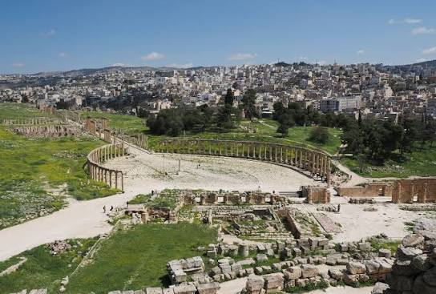
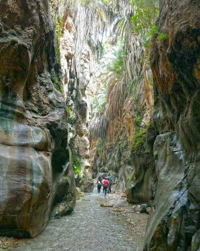
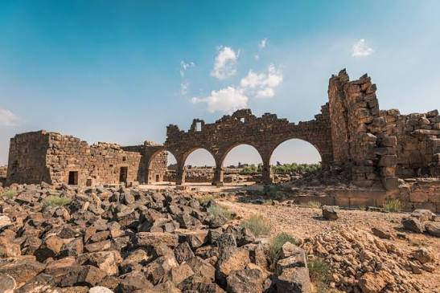

أشهر الوجهات السياحية
اكتشف مجموعة من أجمل الأماكن في الأردن



رحلة بين التاريخ والطبيعة والمغامرة، من البتراء الوردية إلى صحراء وادي رم، ومن البحر الميت إلى جبال عجلون.
اكتشف الأماكن السياحية خطط رحلتكأرض الحضارات والتاريخ والطبيعة المتنوعة
يُعد الأردن من الوجهات السياحية المميزة، حيث يجمع بين المواقع الأثرية العريقة والمناظر الطبيعية والتقاليد الثقافية الأصيلة.
يضم الأردن العديد من الأماكن السياحية، مثل البتراء وجرش ووادي رم والبحر الميت وقلعة الكرك.
تعرف على الأردناكتشف مجموعة من أجمل الأماكن في الأردن

وجهات أردنية تستحق الزيارة والتعرف عليها



تجارب متنوعة تناسب اهتمامات الزوار
اكتشاف المدن القديمة والقلاع والمواقع الأثرية.
الاستمتاع بالجبال والأودية والمحميات الطبيعية.
زيارة البحر الميت والمناطق المعروفة بالاستجمام.
اختر الأماكن التي ترغب بزيارتها وابدأ في إعداد برنامجك السياحي.
ابدأ تخطيط رحلتك